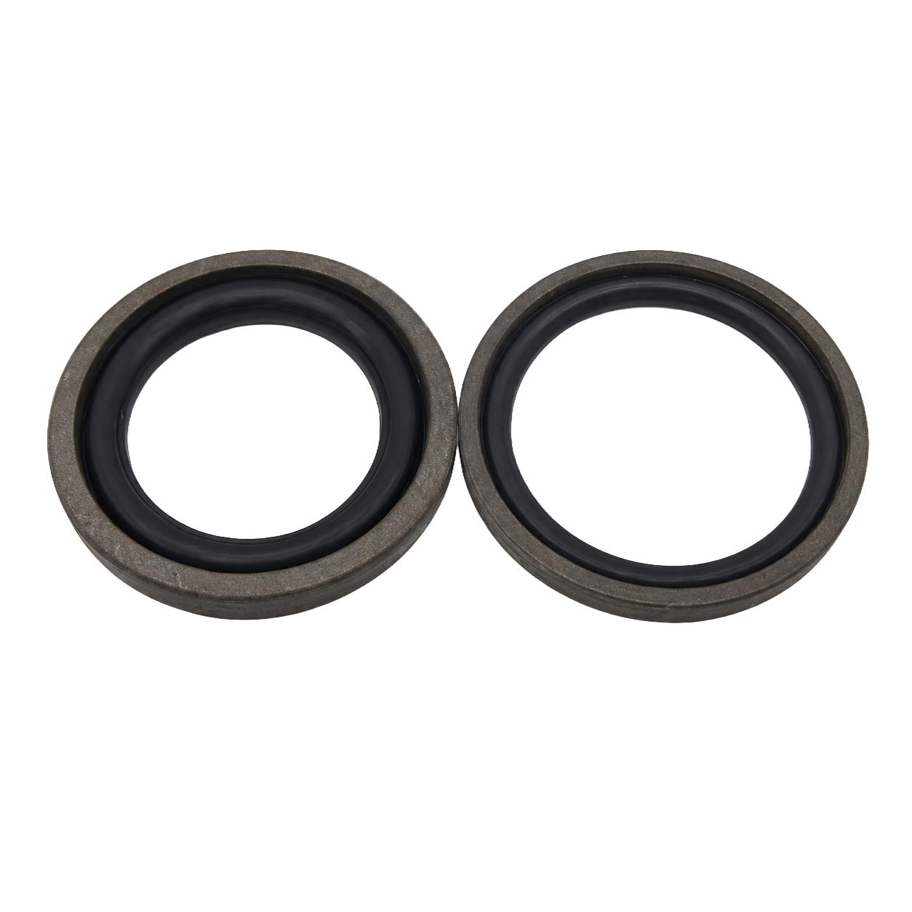

03 · Estanqueidad
Juntas Shamban
Más de 5.000 referencias en NBR, EPDM, VMQ, FKM y PTFE, para aplicaciones dinámicas y estáticas en cualquier sector industrial.

Por qué comprarlo en Sumifluid
Juntas Shamban con garantía de suministro
Stock permanente
Referencia disponible en nuestro almacén de Elche para envío inmediato.
Asesoramiento técnico
Equipo especializado que le ayuda a elegir la referencia exacta.
Envíos 24/48h
Cobertura a toda la península desde nuestro almacén en Elche.
Fabricación a medida
Si no está en catálogo, lo diseñamos en nuestro taller propio.
Otras familias
Más categorías de Estanqueidad


Preguntas frecuentes sobre juntas Shamban
¿Qué es una junta tipo Shamban?
Es una junta compuesta de sellado (habitualmente un aro elastómero combinado con un anillo de deslizamiento de PTFE) que ofrece baja fricción y buen comportamiento dinámico en pistones y vástagos hidráulicos.
¿En qué se diferencia de una junta tórica con aro de apoyo?
El diseño compuesto de la junta Shamban reduce la fricción y mejora el comportamiento a bajas velocidades y arranques, frente a la combinación tradicional de junta tórica más aro de apoyo.
¿Para qué aplicaciones se recomienda este tipo de junta?
Se recomienda en cilindros hidráulicos de alta exigencia dinámica, donde se busca minimizar el efecto stick-slip (agarrotamiento y deslizamiento irregular) del vástago.
Contacto directo
¿Necesita juntas shamban?
Consúltenos disponibilidad, plazos y precio sin compromiso. Le respondemos en horario laboral.